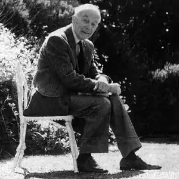

Тріз народився 11 серпня 1909 року в Ноттінгемі у родині торговця вином. Свою літературну кар'єру він розпочав ще у дитячому віці, написавши п'єсу на три акти, яку поставили під час його навчання у Ноттінгемській середній школі.
Джефрі став стипендіатом в Оксфордському університеті, але вважав, що викладацька робота його не надихає, тому вирішив переїхати до Лондона. Там Тріз спробував себе як письменник, написавши свій перший дитячий роман "Луки проти баронів" (1934). Цим романом письменник повністю переписав історію Робін Гуда з точки зору простих людей, а не аристократів. Роман було перекладено багатьма мовами і він мав дуже добрі продажі. Його наступна робота "Товариші по Хартії" була не менш успішною, а однією з найвідоміших праць досі залишається "Ключ до таємниці", написана ним в 1940 році.
Протягом одного року Тріз викладав історію та англійську мову в приватній школі Ессекса, продовжуючи писати у вільний час. Там він зустрів свою дружину Маріан Боєр, яка сама була вчителькою. У 1933 році вони одружилися, переїхали до Бата, де друзі запропонували їм житло. Згодом у них народилася донька Джоселін. Темою більшості праць письменника є незмінна віра в рівність і справедливість. Його романи пов'язані з історичними сюжетами та проблемами сучасності. Варіюються від Стародавньої Греції ("Корона з Фіалок"), Середньовіччя: ("Червоні вежі Гранади"); Єлизаветинської Англії: ("Ключ до таємниці"); Реставрації: Лондон ("Вогонь на вітрі"); французької революції: ("Грім Вальмі"); більшовицької революції ("Білі ночі Петербурга") аж до Другої світової війни ("Завтрашній день — чужий"). Хоча його головним успіхом була історична фантастика, Тріз був різнобічним автором, який також писав біографії для дорослих і дітей, літературну критику, шкільні оповідання, романи для дорослих, детективи/пригодницькі історії та п'єси. Деякі з них, зокрема його чотири романи для дорослих та збірка дитячих детективів, сьогодні майже забуті. Їх можна зустріти лише у приватних колекціях. Проте вони мали значний успіх під час їх опублікування. Його значення як письменника-новатора представлено в трьох основних сферах. Однією із яких, була поява завдяки йому нової форми шкільної історії, починаючи з праці "No Boats on Bannermere" (1949). Автор також написав п'ять книг Беннердейла. Це зрозумілі та реалістичні історії про групу друзів та їхнє життя вдома та у школі. Вони також мають історичне значення, оскільки були першими сучасними шкільними історіями у яких важливий дім, а школа не є центром життя героїв. Герої дорослішають і розвиваються. Це був важливий крок у розвитку шкільної історії, перехід від школи-інтернату/закритого громадського середовища до підходу, який розглядав школу як один із аспектів життя. Іншою важливою подією було те, що історії Тріза були про звичайних дітей, які вели простий спосіб життя, на відміну від так званих порятунків на вершині скелі, матчів з крикету та інших характерних в той час шкільних історій. Джефрі Тріз продовжував писати до кінця свого життя. У 1997 році у нього було чотири книги, які чекали на публікацію. У свої вісімдесят років він цікавився сучасною політикою, обираючи різноманітні періоди політичної нестабільності, такі як наприклад Румунія за часів Чауческу, для задумів своїх наступних книг. Помер 27 січня 1998 року у місті Бат, де мешкав більшу частину свого життя.